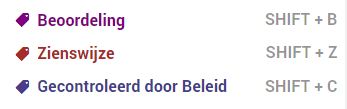
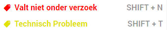
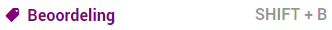
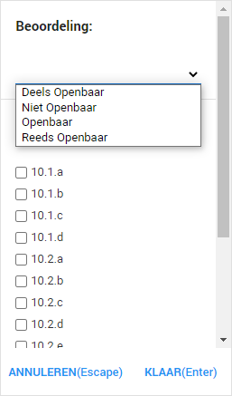
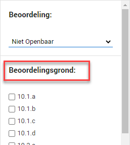
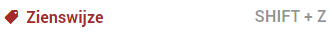
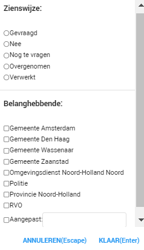

Het label Valt onder het verzoek gebruikt u wanneer een document relevant is voor het Woo-verzoek. Deze gebruikt u dus om bij te houden welke documenten er opgeleverd dienen te worden.
Wanneer u dit label toewijst wordt het mogelijk om 3 andere labels toe te voegen aan het document:

Aangezien het document relevant is voor het Woo-verzoek is het interessant om meer informatie op te nemen over het document. Deze labels worden in de volgende paragrafen toegelicht.
Aangezien het document relevant is voor het Woo-verzoek vervallen twee andere labels:

Deze labels worden in de volgende paragrafen toegelicht.
Indien u foutief een label heeft toegevoegd kan het soms nodig zijn om een bepaald label te verwijderen voordat u een ander label weer kunt toevoegen. In het geval u de label Valt onder het verzoek foutief toewijst, zult u deze eerst weer moeten verwijderen voordat u de label Valt niet onder verzoek kunt toewijzen.
Bij de label Beoordeling kunt u informatie over het document neerzetten met betrekking tot de openbaarheid.

Hier selecteert u of het document geheel, deels of niet openbaar gemaakt gaat worden. Daarnaast is het ook mogelijk om aan te geven dat het document al openbaar is. Indien u het document Niet openbaar maakt dient u onder het dropdown menu ook aan te klikken op basis van welke wetgeving u het document niet openbaar maakt.


Indien het document Reeds Openbaar is neemt u de vindplaats op in het label Toelichting.
Bij de label Zienswijze kunt u aangeven of er een zienswijze opgevraagd moet worden en van wie.

U kunt hier aangeven of een zienswijze gevraagd moet worden en of deze al gevraagd is of nog gevraagd moet worden. U kunt hier ook aangeven bij wie de zienswijze opgevraagd moet worden. Indien het een persoon of organisatie is die nog niet in ZyLAB ONE is opgenomen kunt u deze zelf toevoegen bij Aangepast. Het is mogelijk om meerdere belanghebbende te selecteren.

Als u helemaal klaar bent met de behandeling van een document geeft u het de label Gecontroleerd door Beleid.